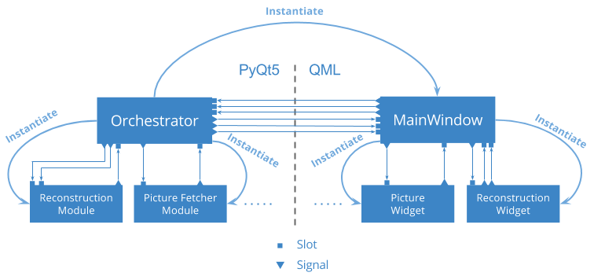

3.2. The model / view pattern¶
3.2.1. General principle¶
The model / view pattern is derived from the model - view - controller pattern traditionally used in web application and in a more general way, in any application that needs to keep a separated logic part. In our case, view and controller are gathered into what we called view. This pattern is then called model / view and is the one on which Qt‘s philosophy relies on.
As the whole concept is well-explained in the Qt’s documentation, we will only gives here a small synthesis. The idea of this pattern is to shared components into two kinds of components, depending of their responsibilities; Components responsible for rendering item and interacting with the user are in the view part. The other, responsible for storing and managing the data, they are called models. Once a view component catches an action from the user, it may either inform the model that it should update itself; either ask the model for some data to display.
In most cases, models may exists and be used without a view. The view is only there to translate user action into concrete models calls. It is a convenient way for a user to manipulate the data whereas it is a convenient way for the programmer to supply and store the same data.
3.2.2. MATRIX model / view implementation¶
In the application, we followed and implemented the model / view pattern. As it has been said before, all view parts have been written using QML while models rely on Python and PyQt5. Beside, in the python’s side, models live alongside other modules that are just interface to library or external resources (for instance, the module who’s handling gphoto2 doesn’t define any model. It acts like a facade and offer control operations on a Camera). That’s why, in order to manage all those modules, there is a top-level component called the Orchestrator in the Python’s side. This is rigorously the same in the QML’s side; Components may be seen as independent entities, all orchestrated by a top-level view called the MainWindow. As both side rely on the same philosophy, we’ll describe only the Python’s side and admit that things are transposable to the QML’s side.
{kind=link}
The Orchestrator’s role is quite straightforward : it instantiates each module, instantiates the view, and watches for signals emitted either by modules, or either by the view. When a signal is caught, there are then two different strategies :
- Directly connect the signal to a corresponding slot
- Define a specific slot to handle the signal
In fact, we use the second case when the signal can’t be connected directly because it involves several modules and/or models. The Orchestrator is then responsible for executing each action necessary to perform the global action required by the signal. It is common in our application that the orchestrator emits at the end a new signal toward the view to inform it that the action has been performed successfully.
As a matter of fact, communications between the QML’s side and the Python’s side are made only (or at least, mainly) between the Orchestrator and the Mainwindow. To be totally exact, actions that only require to retrieve data from a model corresponds to direct model method calls in QML. Thus some models (for instance, the pictureModel) define internal slots that are never used by the Orchestrator, but corresponds to callable functions in QML. Moreover, PyQt5 doesn’t make any distinction between INVOKABLE methods and SLOTS from the Qt framework. That’s why some slots special slots are necessary, but they should only be defined on models and models items and only on accessors. All other requests from the view should be transmitted to the MainWindow which will either handle it locally, or either transmit it to the Orchestrator.